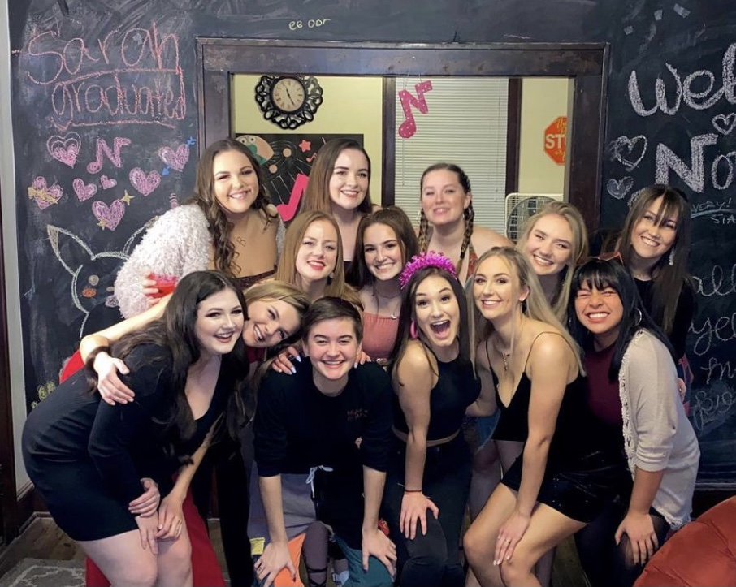
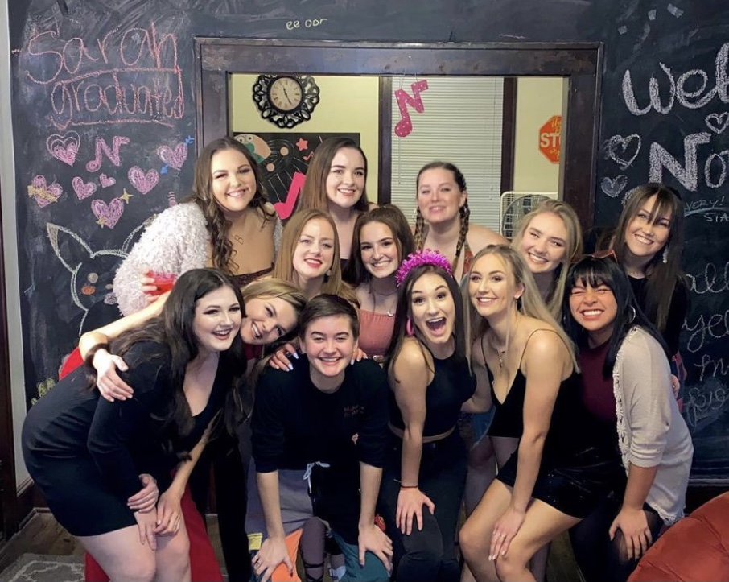
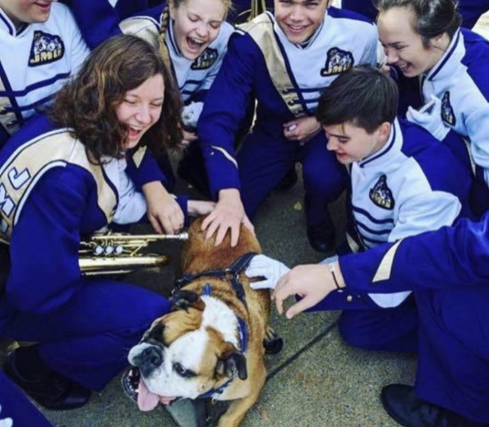

Spring 2021
Just a quick little Intro- I am a sophomore ISAT student at James Madison University. Whenever I'm not studying,
you can likely find me hanging out with my students orgs, either making music or volunteering in the Harrisonburg
community.
.jpeg) 

I have been a member of the JMU a capella group Note-oriety since fall semester of my freshman year. I have grown so much as both a musician and a friend in this group and consider them my second family. We recently came out with a new album called "Note to Self" that you should ABSOLUTELY check out!

I joined the MRDs Mellophone section the fall of my freshman year. I've been in marching band since eighth grade, meaning I just completed my 7th consecutive marching season. Not only is band super fun and rewarding, but the people in the program are really what make it so special. It's very surreal to come to JMU as a freshman and feel like you already have 465 new best friends (before classes even start), and the comradery really makes the shows and the messages behind them that much more meaningful.

I pledged the community service fraternity Alpha Phi Omega the fall of my freshman year. Soon after initiation, I switched my major to ISAT so that I could study environmental sustainability. I mainly did this after being inspired by my inherited service project Vine and Fig. Vine and Fig is a property in downtown Harrisonburg that serves a few purposes. There are seven buildings on the property that serve as housing for those who Vine and Fig take in. Other than being a sort of shelter, there are a number of sustainability projects going on at all times aroud the property, and I go there once a week and help out with whatever new project were doing that week (whether it be digging a ditch, cutting down trees, or building a chicken tractor).

One of my favorite things to do (when the world is normal) is travel, specifically to national parks. So far, I've been to 8, with my favorite's being the Joshua Tree Forest and the Grand Canyon. Honestly, I will go anywhere if it means I can camp, hike, rock climb, or really do anything outside. Fun Fact: I've actually completed the third hardest white water rafting course in the country in West Virginia.

Donec eget ex magna. Interdum et malesuada fames ac ante ipsum primis in faucibus. Pellentesque venenatis dolor imperdiet dolor mattis sagittis magna etiam.

Donec eget ex magna. Interdum et malesuada fames ac ante ipsum primis in faucibus. Pellentesque venenatis dolor imperdiet dolor mattis sagittis magna etiam.